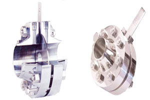
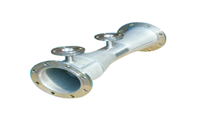

Excelok Brochure
Public product brochure fetched from Excelok source website.
Download PDFSingapore-based engineering services, process instrumentation products, marine support and APAC project response.
| Response | Singapore onshore/offshore, Indonesia, Brunei and APAC support |
|---|---|
| Documentation | Method statement, risk assessment, inspection report and close-out pack |
| Quality | Traceable tools, calibrated gauges and certification support |
Public product brochure fetched from Excelok source website.
Download PDFMarine, LNG, HVAC&R, E&I and valve service overview.
Request gated downloadProject-specific certifications and competency documents.
View CertificationsTypical response planning is 24-72 hours depending on site, vessel access, permits and manpower availability.
Yes. Add products and services to the RFQ cart, then submit one combined enquiry with files and notes.
Project packs can include test reports, material certificates, calibration records and competency documents where applicable.
Singapore onshore/offshore, Indonesia, Brunei, Malaysia and wider APAC project support.
Valves & Flow Measurement
Designed and manufactured to AGA 3 / ISO 5167 compliance.
Excelok | ANSI / project specific | ISO 5167, AGA 3
Quick View
Flanges
Manufactured in compliance with ANSI B16.36.
Excelok | Class 150 to 2500 | ANSI B16.36
Quick View
Flow Measurement
Designed and manufactured to ISO 5167 compliance.
Excelok | Custom engineered | ISO 5167
Quick ViewSend your scope, datasheet, vessel schedule or shutdown window. Our team will respond with the fastest practical route.